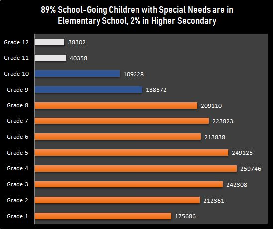
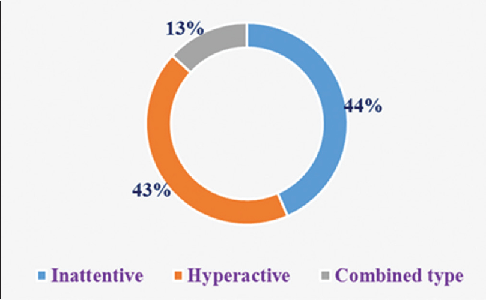
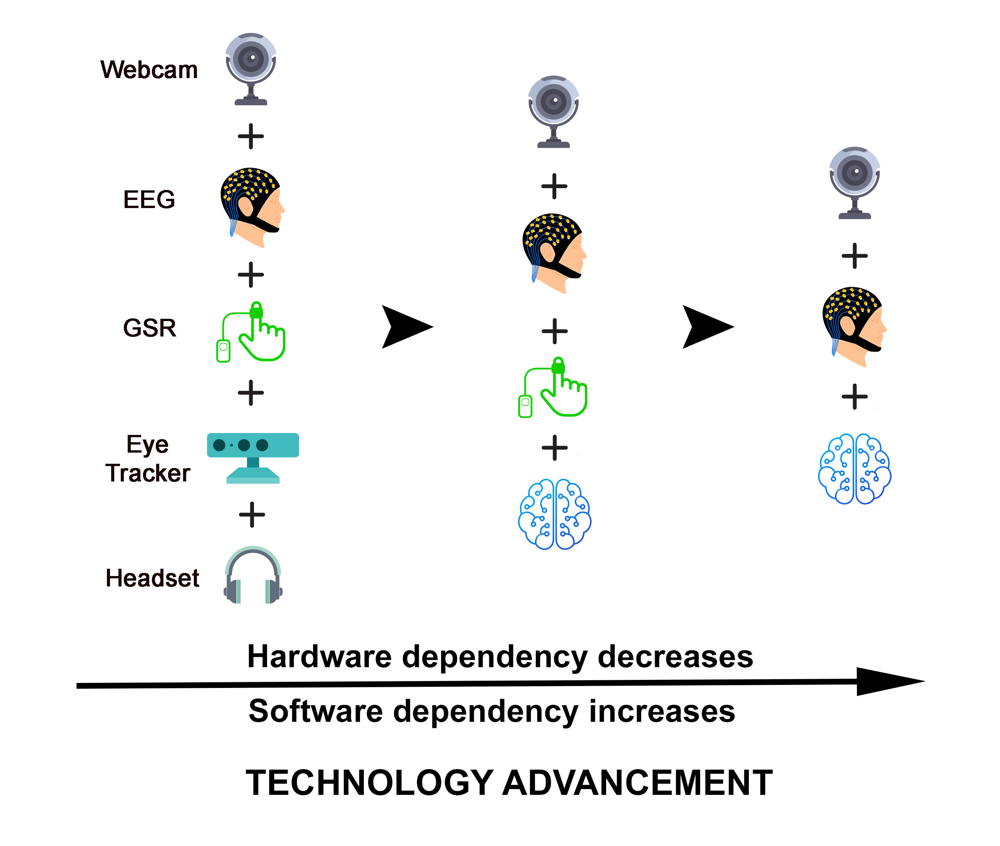

Mission
Effectively determining & managing attention of the child whilst a session is being conducted to deliver enhanced learning outcomes.
Vision
To develop an Intelligent Education Platform, “EngageMe” to offer personalised and evidence-based identification of attention level among SEN children
Approach
EngageMe strives to develop detailed contextual models of the psychological variables of interest, based on enriched user and activity models.
Strategy
Extracting cognitive data and implementing psychologically grounded analyzers into the engagement evaluation system.
Mission: "No Child Left Behind"
85% of SEN parents believe that excelling in academics instills pride, self-confidence and leads to inclusiveness (as per Survey Conducted , Participate in survey ).

Growth of Edtech platforms coupled with COVID 19 pandemic has irreversibly changed the education delivery to a hybrid model (online + in-person) involving more and more online tools and technologies.
Traditionally supplemental education delivery for SEN children happens as a 1-on-1 in-person session through trained Special Educators (SE). This places SEN children and their guardians at a significant disadvantage to leverage the modern Edtech tools.
Our research highlights :
- No SEN children focussed Edtech platform exists today.
- SE focused on specialised Middle and Secondary supplemental education are scarce and inaccessible.
- Parents take on average Six months to find a suitable Special Educator! (Discovery problem).
- Parents are outcome focussed and willing to embrace any type of intervention; online or offline.
- Average time spend on a SEN child is 4X of other children.
- Parents are looking for interventions enabling self-regulation.
- Engagement is poor & ineffective in the present online setups due to absence of feedback mechanism.
The above clearly suggests that it is difficult to find out the right SE (Discovery issue); It is expensive ( Price sensitivity); especially for middle and higher class students, specialised lack of skilled SEs (Supply & demand gap); engagement is ineffective in an online environment.
The lacunae of the present system will be offset by taking this engagement online while effectively determining & managing attention of the child whilst a session is being conducted to deliver enhanced learning outcomes.
This framework of online education for SEN children can be enabled by creating a closed loop feedback system that monitors and measures attention; assists children in self regulation and enables teachers to take corrective measures continuously. This technology (and operational model) needs to be personalised, humanised, and effective!
Children with SEN are not able to cope up with the academic pressure and need innovative solutions to make their learning more effective, personalised and outcome oriented.

Our Vision
There is plethora of online asynchronous content via Khan Academy, You tube for Education etc. However, SEN children require SE-assisted delivery of online content, while SEs require continuous feedback of attention cues, which being essential is not available in the present collaboration tools.
Our hypothesis is that continuous feedback of attention cues to SE will make assisted delivery of available online asynchronous content effective.

Figure 1: Prevalence of attention deficit hyperactivity disorder among schoolchildren based on subtypes
We aim to develop an Intelligent Education Platform, “EngageMe” that will offer personalised, monitored and evidence-based identification of attention level among SEN children (ADHD to begin with) to make assisted delivery of online asynchronous content effective. EngageMe will provide closed loop feedback to help the special educators and pedagogues in reaching an objective and reliable assessment of the child’s attention level during online learning. EngageMe uses machine learning and artificial intelligence techniques to assist the Special Educators' deliver online content. To achieve this aim, we have set forth following objectives:- To investigate the effectiveness of physiological measures in evaluation of the level of attention among SEN children (ADHD to begin with) during online learning settings. The investigated physiological signals will include Galvanic Skin Response (GSR), Heart-Rate Variability (HRV), Electroencephalogram (EEG) and pupil-dilation (Eye-tracker).
- To investigate the effectiveness of audio-visual signals in evaluation of the level of attention among SEN children (ADHD to begin with) during online content delivery.
- To develop an ICT system integrating the findings of the objectives 1 and 2 by employing machine or deep learning algorithms for real time continuous assessment of attention level among SEN children (ADHD to begin with) during online education.
- To develop an adaptive guided learning system on digital platforms. Through a desktop/ Online software, EngageMe will offer adaptive, personalised and customized learning as per the attention level of the children detected through the machine learning model.
Our Approach: "EngageMe"
 EngageMe strives to develop detailed contextual models of the psychological variables of interest, based on enriched user and activity models.
EngageMe will develop and evolve its base model through calibrated nister-play between SEN children, SE, Researchers, Technologists and asynchronous content. The SEs provide and construct meaningful educational experiences, researchers define the measurement variables and analysis methodologies incorporating cognitive triggers, whereas the technologists provide the technological framework for extracting cognitive data and implementing psychologically grounded analyzers into the engagement evaluation system.
Strategy
- EngageMe will advance the state of the art on behaviour understanding among children with ADHD by developing detailed contextual models of the psychological variables of interest based on enriched user and activity models.
- This will require an integrated collaboration between SEs and technical partners.
- The educators will provide and construct meaningful educational experiences to be employed by the children with ADHD. Researchers will define the measurement variables and analysis methodologies incorporating cognitive triggers such as affects, whereas the technologists will provide the technological framework for extracting cognitive data and implementing psychologically grounded analyzers into the engagement evaluation system.